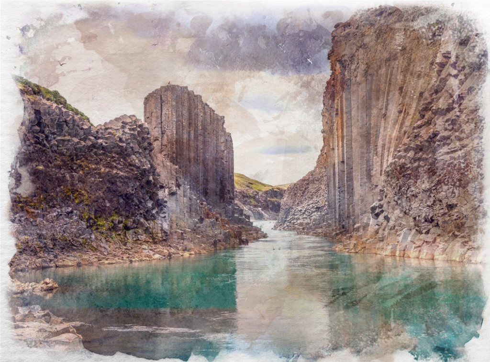

Basalt
A volcanic rock formed from lava, it makes up a great deal of the world’s bedrock and can most commonly be found underwater or in and around volcanic regions where it makes up nine tenths of the rock found. An excellent road-building material due to the length of time it lasts, this hard black stone can be used for sculpting or as a grindstone.
Mineral Contents
Feldspar
Olivine